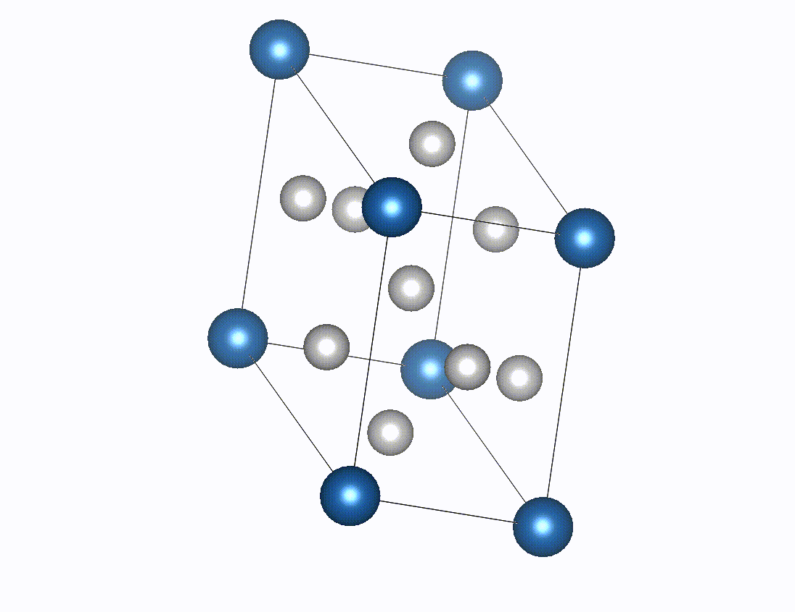
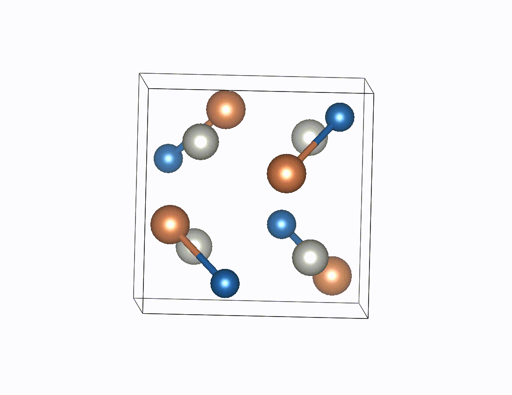

Crystals play a vital role in a wide range of materials, influencing both cutting-edge technologies and everyday applications. Recently, deep learning approaches for crystal property prediction have shown exceptional performance, driving significant progress in material discovery. However, supervised approaches can only be trained on labeled data and the number of data points varies for different properties. Making full use of unlabeled data remains an ongoing challenge. To address this issue, we propose an unsupervised Denoising Pre-training Framework (DPF) for crystal structure. DPF trains a model to reconstruct the original crystal structure from recover the masked atom types, perturbed atom positions, and perturbed crystal lattices. Through the pre-training, models learn the intrinsic features of crystal structures and capture the key features influencing crystal properties. We pre-train models on 380,743 unlabeled crystal structures and fine-tune them on downstream property prediction benchmarks. Extensive experiments demonstrate the effectiveness of our denoising pre-training framework.
The pipeline of our denoising pre-training framework. The denoising network component can be replaced with any feature extraction network. The downstream tasks can include crystal property prediction, classification, and crystal generation.
The experimental results in terms of MAE on Materials Project dataset. * denotes the results are taken from the referred papers. The best results are shown in bold and the sub-optimal results are underlined
The experimental results in terms of MAE on JARVIS dataset. * denotes the results are taken from the referred papers. The best results are shown in bold and the sub-optimal results are underlined.
@inproceedings{
anonymous2024boost,
title={Boost your crystal model with denoising pre-training},
author={Anonymous},
booktitle={ICML 2024 AI for Science Workshop},
year={2024},
url={https://openreview.net/forum?id=u2qYzRRg02}
}